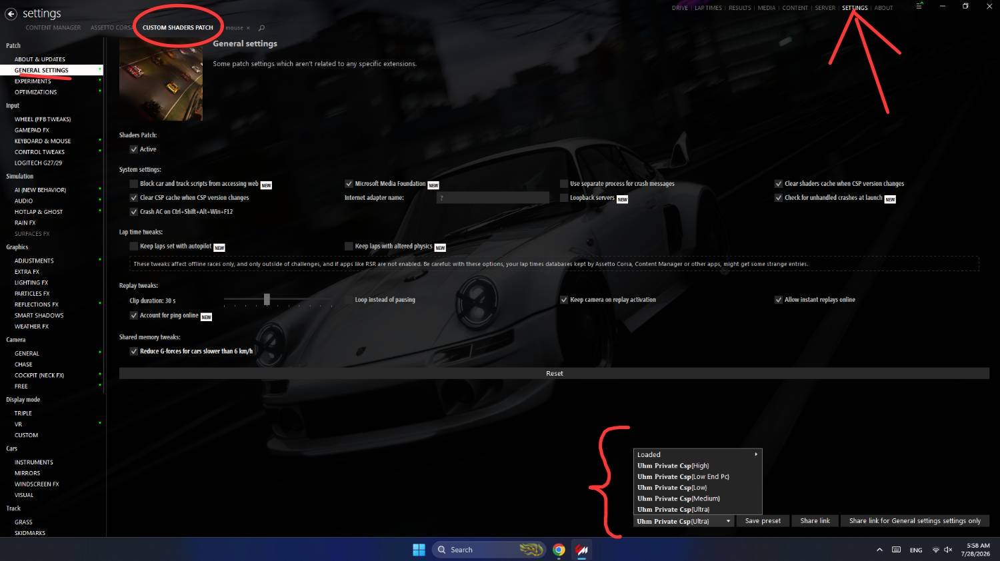

02🖼 با عکس
C:\Users\نام کاربری ویندوز\AppData\Local\AcTools Content Manager\Presets\Custom Shaders Patch Presets
💡
SETTINGS → Custom Shaders Patch → General SettingsL
Low End PC
L
Low
M
Medium
H
High
U
Ultra
